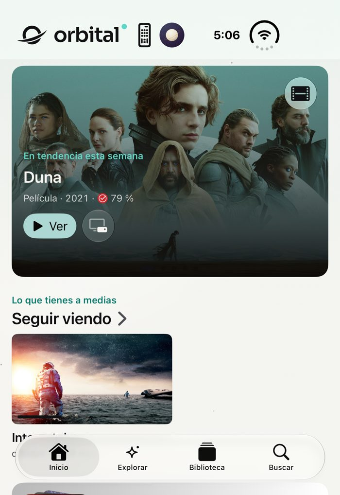
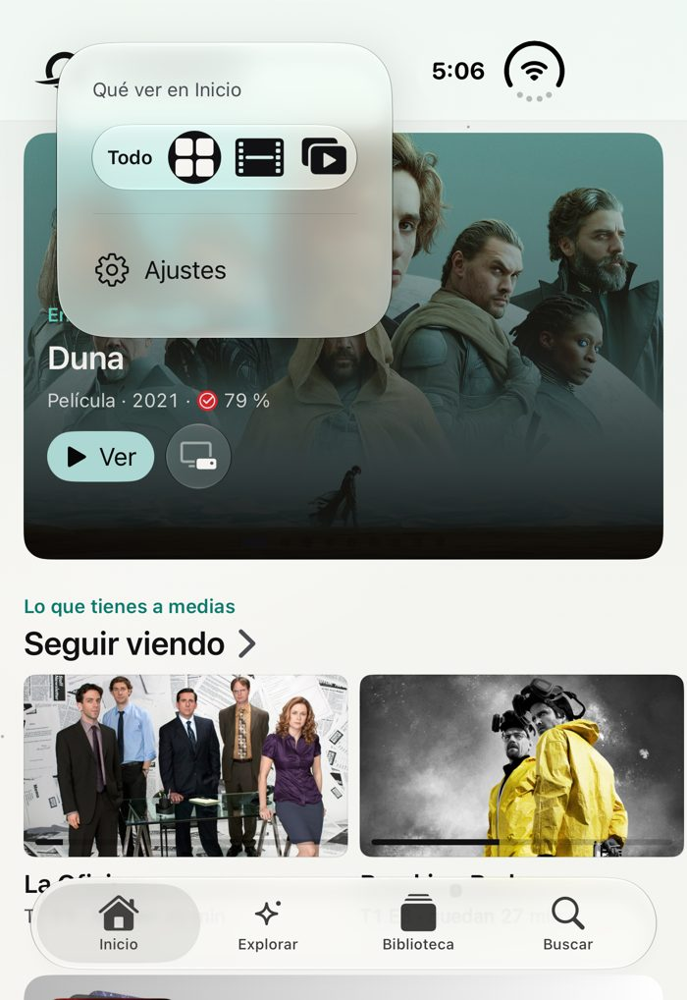
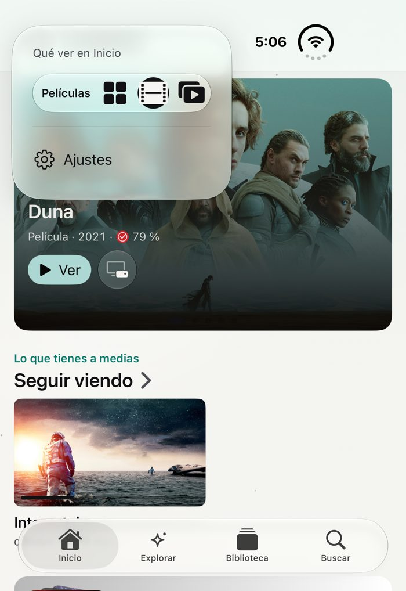

<title>Control, Ajustes y filtro</title>
<meta name="claude:viewport-fit-sides" content="cover">
<link rel="stylesheet" href="https://fonts.googleapis.com/css2?family=Inter:wght@400;500;600&family=Space+Grotesk:wght@600;700&display=swap">
<style>
/* Tres decisiones, cada una con «Hoy» y sus opciones lado a lado en el tamaño de la pantalla de afuera del Duo (466 × 678). */
:root {
  --bg: #f2f4f3; --card: #ffffff; --fg: #14181a; --muted: #5a6468; --line: #dde3e2; --accent: #0b8a85; --pick: #0b8a85; --pick-bg: #e3f4f2;
  --display: "Space Grotesk", system-ui, sans-serif; --body: "Inter", system-ui, sans-serif;
}
@media (prefers-color-scheme: dark) { :root:not([data-theme="light"]) {
  --bg: #0e1213; --card: #171c1e; --fg: #e7eced; --muted: #9aa6aa; --line: #283033; --accent: #3cc6bf; --pick: #3cc6bf; --pick-bg: #12302e; color-scheme: dark } }
:root[data-theme="dark"] {
  --bg: #0e1213; --card: #171c1e; --fg: #e7eced; --muted: #9aa6aa; --line: #283033; --accent: #3cc6bf; --pick: #3cc6bf; --pick-bg: #12302e; color-scheme: dark }
body { background: var(--bg); color: var(--fg); font-family: var(--body); line-height: 1.5;
  padding-left: max(16px, env(safe-area-inset-left, 0px)); padding-right: max(16px, env(safe-area-inset-right, 0px)); padding-block: 28px 72px; }
main { max-width: 1120px; margin: 0 auto; display: grid; gap: 40px; }
h1 { font-family: var(--display); font-size: clamp(1.7rem, 4vw, 2.3rem); margin: 0; text-wrap: balance; }
h2 { font-family: var(--display); font-size: 1.35rem; margin: 0; text-wrap: balance; }
.intro { display: grid; gap: 10px; max-width: 66ch; }
.intro p, .lead { margin: 0; color: var(--muted); }
.done { background: var(--card); border: 1px solid var(--line); border-radius: 12px; padding: 14px 16px; max-width: 66ch; display: grid; gap: 4px; }
.done b { font-family: var(--display); color: var(--accent); }
.done p { margin: 0; }
section.decision { display: grid; gap: 14px; }
.dhead { display: flex; gap: 12px; align-items: baseline; flex-wrap: wrap; }
.code { font-family: var(--display); font-weight: 700; color: var(--accent); font-variant-numeric: tabular-nums; }
.options { display: grid; grid-template-columns: repeat(auto-fit, minmax(min(100%, 250px), 1fr)); gap: 16px; }
.opt { background: var(--card); border: 1px solid var(--line); border-radius: 14px; padding: 12px; display: grid; gap: 10px; align-content: start; min-width: 0; }
.opt.pick { border: 2px solid var(--pick); background: linear-gradient(var(--pick-bg), var(--card) 40%); }
.opt.today { opacity: .92; }
.opt header { display: flex; gap: 8px; align-items: baseline; flex-wrap: wrap; }
.opt h3 { margin: 0; font-size: 1rem; font-weight: 600; flex: 1; min-width: 0; }
.tag { font-size: .72rem; font-weight: 600; letter-spacing: .03em; color: var(--pick); border: 1px solid var(--pick); border-radius: 999px; padding: 1px 8px; }
.tag.grey { color: var(--muted); border-color: var(--line); }
.opt img { width: 100%; height: auto; border-radius: 12px; border: 1px solid var(--line); display: block; background: #000; }
.opt ul { margin: 0; padding-left: 18px; font-size: .88rem; display: grid; gap: 3px; }
.opt li::marker { color: var(--muted); }
.plus { color: var(--fg); } .minus { color: var(--muted); }
.why { margin: 0; font-size: .92rem; max-width: 70ch; }
.why b { color: var(--accent); }
.dictate { background: var(--card); border: 1px solid var(--line); border-radius: 12px; padding: 16px; display: grid; gap: 8px; max-width: 70ch; }
.dictate p { margin: 0; }
.dictate .say { font-family: var(--display); font-size: 1.25rem; font-weight: 700; color: var(--accent); }
.evidence { display: grid; grid-template-columns: repeat(auto-fit, minmax(min(100%, 150px), 1fr)); gap: 14px; }
.strip { background: var(--card); border: 1px solid var(--line); border-radius: 14px; padding: 10px; display: grid; gap: 8px; align-content: start; }
.strip img { width: 100%; height: auto; border-radius: 10px; border: 1px solid var(--line); display: block; }
.strip p { margin: 0; font-size: .84rem; }
.strip b { font-weight: 600; }
.map { overflow-x: auto; }
.map table { border-collapse: collapse; width: 100%; min-width: 560px; font-size: .9rem; background: var(--card); border: 1px solid var(--line); border-radius: 12px; overflow: hidden; }
.map th, .map td { text-align: left; padding: 10px 12px; border-bottom: 1px solid var(--line); vertical-align: top; }
.map th { font-family: var(--display); font-weight: 600; font-size: .85rem; color: var(--muted); }
.map tr:last-child td { border-bottom: 0; }
.map td:first-child { font-weight: 600; }
.sources { font-size: .84rem; color: var(--muted); display: flex; flex-wrap: wrap; gap: 4px 14px; }
.sources a { color: var(--accent); }
.moments { display: grid; grid-template-columns: repeat(auto-fit, minmax(min(100%, 230px), 1fr)); gap: 16px; }
.moment { background: var(--card); border: 1px solid var(--line); border-radius: 14px; padding: 12px; display: grid; gap: 8px; align-content: start; min-width: 0; }
.moment img { width: 100%; height: auto; border-radius: 12px; border: 1px solid var(--line); display: block; background: #000; }
.moment h3 { margin: 0; font-size: 1rem; font-weight: 600; }
.moment .rule { margin: 0; font-size: .9rem; }
.moment .state { font-size: .75rem; font-weight: 600; color: var(--muted); }
.moment .state.ok { color: var(--accent); }
.notes { font-size: .88rem; color: var(--muted); max-width: 70ch; display: grid; gap: 6px; }
.notes p { margin: 0; }

.say { font-family: var(--display); font-size: 1.25rem; font-weight: 700; color: var(--accent); margin: 0; }
.note { font-size: .85rem; color: var(--muted); margin: 0; border-left: 3px solid var(--line); padding-left: 10px; }
.pair { display: grid; grid-template-columns: 1fr 1fr; gap: 8px; }
.pair figure { margin: 0; display: grid; gap: 4px; }
.pair figcaption { font-size: .8rem; color: var(--muted); }

.say { font-family: var(--display); font-size: 1.25rem; font-weight: 700; color: var(--accent); margin: 0; }
.note { font-size: .85rem; color: var(--muted); margin: 0; border-left: 3px solid var(--line); padding-left: 10px; }
</style>
<main>
  <div class="intro">
    <h1>Control, Ajustes y filtro en el Duo</h1>
    <p>Ahora son capturas reales del Duo cerrado, con los íconos que ya usa Orbital: la pastilla de vidrio del filtro (cuadritos, rollo y pantallas), el control y el engrane de Ajustes. Las dos opciones están construidas y las probé tocando.</p>
  </div>
  <section class="decision">
    <div class="dhead"><h2>El problema, visto como diseño</h2></div>
    <div class="notes">
      <p><b>El renglón no se estira.</b> iOS fija la hora y la señal junto a la cámara. A la izquierda caben «orbital» y dos botones chicos; un tercero o un menú de iOS manda todo a «…» (lo probé).</p>
      <p><b>Las tres cosas no pesan igual.</b> El control lo usas muchas veces al día, el filtro de vez en cuando y Ajustes casi nunca. Lo frecuente va a un toque y lo raro puede ir a dos.</p>
      <p><b>El filtro cambia toda la página</b> (portada, «Seguir viendo», canales), no solo la portada.</p>
    </div>
  </section>
  <section class="decision">
    <div class="dhead"><span class="code">HB1</span><h2>Dónde va el filtro (y Ajustes)</h2></div>
    <div class="options">
      <article class="opt pick">
        <header><span class="code">HB1-B</span><h3>El filtro en la portada</h3><span class="tag">recomendada</span></header>
        <div class="pair">
          <figure><figcaption>En reposo: un ícono en la esquina.</figcaption></figure>
          <figure><figcaption>Al tocarla se abre con los tres.</figcaption></figure>
        </div>
        
        <ul>
          <li class="plus">El control y tu foto siguen a un toque. Tu foto abre Ajustes, igual que en las otras pestañas.</li>
          <li class="plus">Es la misma pastilla que el 17 Pro tiene arriba: nada nuevo que aprender. El ícono de la esquina siempre dice qué estás viendo.</li>
          <li class="minus">Va encima del arte. Se lee bien porque es de vidrio, pero tapa un poco la esquina.</li>
          <li class="minus">Parece que filtra solo la portada, aunque filtra toda la página.</li>
        </ul>
      </article>
      <article class="opt">
        <header><span class="code">HB1-A</span><h3>Tu foto abre un globo</h3></header>
        <div class="pair">
          <figure><figcaption>En reposo: la portada limpia.</figcaption></figure>
          <figure><figcaption>Al tocar tu foto.</figcaption></figure>
        </div>
        
        <ul>
          <li class="plus">La portada queda limpia y el globo dice para qué es («Qué ver en Inicio»).</li>
          <li class="plus">Con un filtro puesto, tu foto lleva su ícono chiquito: se sabe que Inicio está filtrado.</li>
          <li class="minus">Ajustes pasa a dos toques, y solo en Inicio del Duo: en las demás pestañas tu foto abre Ajustes directo.</li>
          <li class="minus">El filtro queda escondido: hay que saber que vive en tu foto.</li>
        </ul>
      </article>
    </div>
    <p class="note">En las dos, el control sigue en el renglón de arriba a un toque, y en tu 17 Pro no cambia nada.</p>
  </section>
  <section class="decision">
    <div class="dhead"><h2>Mi recomendación</h2></div>
    <p class="say">HB1-B</p>
    <p class="why"><b>Por qué:</b> deja todo a un toque, con las mismas piezas que ya conoces, y tu foto hace lo mismo en todas las pestañas. Lo que pierde (un poco de esquina de la portada) es menos que lo que A esconde.</p>
  </section>
</main>
